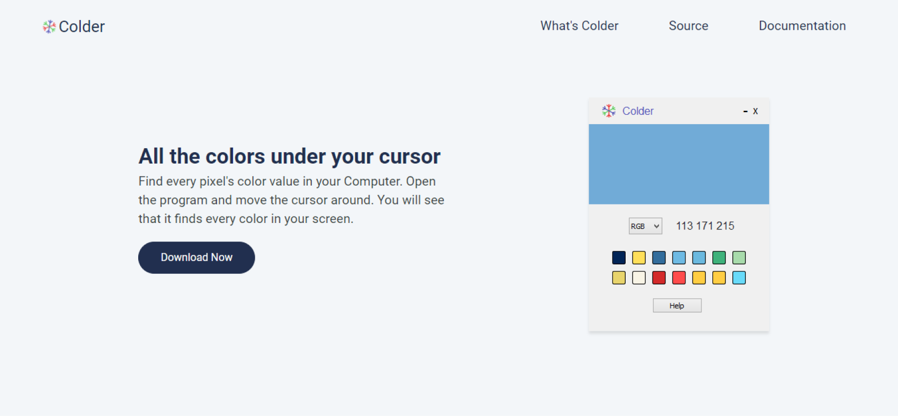

Hello, I am
Panagiotis Semertzidis
A junior web developer and an electrical engineer
Explore Projects Contact meHello, I am
A junior web developer and an electrical engineer
Explore Projects Contact meUI/UX design, front-end design, full development of the app.
In these project I developed a program which finds every pixel's color anywhere in the screen. I also developed the website of these app. You can download the app from the website. It's an open source project. You can find the code here.
UI/UX design, front-end design, full development of the app.

In these project I developed a program which let user to login and manipulate onedrive from the terminal. I also developed the website of these app. You can download the app from the website. It's an open source project. You can find the code here.
I am a student in electrical engineer and computer engineer at AUTH University of Thessaloniki. I like coding most of the time in python or javascript. If you want to contact me, you can find me at semepana@auth.gr